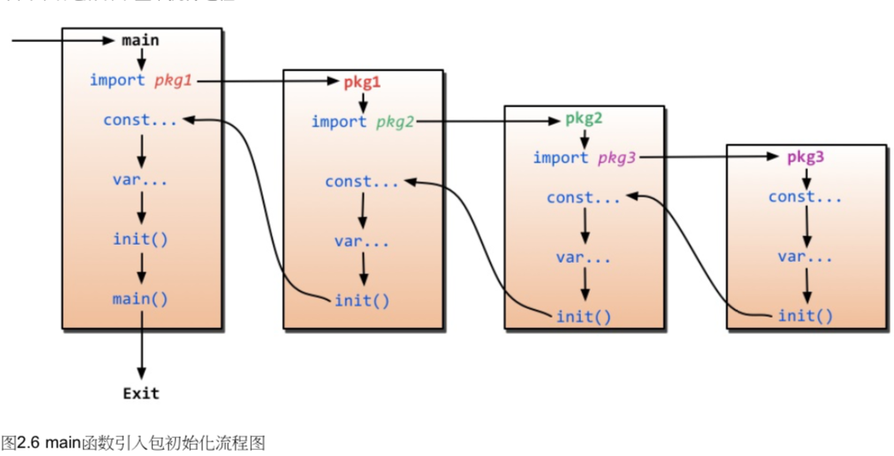

2 Go 基础¶
定义变量:
var varname type
var name1, name2, name3 type
var name type = value
var a,b,c = v1, v2, v3
a,b,c := v1, v2 ,v3
_, b = 1, 2
常量：
const name = value
const Pi float32 = 3.14
const i = 100
内置基础类型：
// Boolean
var isActive = bool // default false
var enabled, disabled = true, false
valid := false
// 数值类型, rune(int32), int8, int16, int32, int64, byte(uint8), uint8, uint16, uint32, uint64
// float32, float64(默认)
// complex64
//字符串, go 字符串都是采用UTF8，用 双引号或者反引号括起来定义，类型是 string
var hello string
var emptyString = ""
s := "hello" // 字符串不可变
c := []byte(s) // 把字符串转换为 []byte 类型
c[0] = 'c'
s2 := string(c) // 转为 string
fmt.Printf("%s\n", s2)
m := `hello
world` // ` 括号来的是Raw string
错误类型：
// go有一个error 类型，package.errors
err:=errors.New("emit macho swarf: elf header corrupted")
if err != nil {
fmt.Print(err)
}
分组声明：
import (
"fmt"
"os"
)
const (
i = 100
pi = 3.14
)
var(
i int
pi float32
)
iota 枚举：
const (
x = iota //x==0
y = iota //y==1
)
设计规则：
- 大写开头的变量可以导出（共有变量）
- 大写字母开头的函数是共有函数
array, slice, map
// array 数组，数组长度也是类型的一部分，[3]int, [4]int 是不同类型
var arr [n]type
var arr [10]int
arr[0] = 42
arr[1] = 13
fmt.Printf("first %d\n", arr[0])
a := [3]int{1, 2, 3}
b := [10]int{1, 2, 3} //其余元素0
c := [...]int{1,2,3} //自动计算个数
doubleArray := [2][4]int{[4]int{1,2,3,4}, [4]int{5,6,7,8}}
// slice 动态『数组』，引用类型，指向一个底层 array。实际场景中使用 slice 要比 array 多
var fslice []int //声明同数组，只是没有长度
slice := []byte {'a','b'}
a := [10]int{1,2,3,4,5,6,7,8,9,10}
var slice []int
slice = a[:]
/* slice 内置函数
len 获取长度
cap 获取最大容量
append 追加一个或多个元素，返回一个 和 slice 类型一样的slice
copy 从 源 slice src 中复制元素到目标 dst，返回复制的元素个数
*/
// map，字典的概念。 map[keyType]valueType
// map 无序，长度不固定，**引用类型**，len(map)返回 key 数量，map 值可以修改。
// map和其他基本类型不同，不是 thread-safe，多个 go-routine 存取用 mutex lock
var numers map[string]int
numbers := make(map[string]int)
numbers["one"] = 1
numbers["ten"] = 10
fmt.Println("one is ", numbers["three"])
rating := map[string]float32{"c": 5, "Go": 4.5}
goRaking, ok := rating["Go"]
if ok {
fmt.Println("go rating is ", goRaking)
} else {
fmt.Println("no go rating")
}
delete(rating, "C")
make, new 操作：
make 只能用于 内建类型(map/slice/chanell)的内存分配, new 用于各种类型，new 返回指针。 make 返回初始化后的（非零）值。
零值(zero value): 变量未填充之前的默认值，通常是 0
int,int8,int32,int64 0
uint 0x0
rune 0
byte 0x0
float32, float64 0
bool false
string ""
流程控制:
// if(不用括号)
if x > 10 {
//...
} else {
//...
}
if x := computeValue(); x > 10 { //允许声明一个变量，但是只在该条件内作用域
//...
} else {
//...
}
if x == 3 {
//...
} else if x < 3 {
//
} else {
}
// goto，还是少用不用吧
// for
sum := 0
for idx := 0; index < 10; index++ {
sum += idx
}
sum := 1
for ; sum < 1000; {
sum += sum
}
// 实现 while 功能
sum := 1
for sum < 1000 {
sum += sum
}
// break/continue
// for 配合 range 读取 slice 和 map 数据
for k,v := range map {
fmt.Println("key, value", k, v)
}
// switch
i := 6
switch i {
case 4:
//
fallthrough // 强制执行后边的代码
}
函数: func 声明
func funcName(input1 type1, input2 type2) (output1 type1, output2 type2) {
//
return value1, value2
}
func max(a, b int) int {
if a > b {
return a
}
return b
}
func SumAndProduct(A, B int) (add int, Multiplied int) {
add = A + B
Multiplied = A * B
return
}
变参：
func myfunc(arg ...int) {
for _, n := range arg {
fmt.Printf("Add the number is :%d\n", n)
}
} // arg 是一个 int 的 slice
传值和传指针：默认传值，无法修改传入的值。除非使用指针
func add(a int) int {
a = a+1
return a
}
// 如果需要修改值，我们可以传递指针
func add_p(a *int) int {
*a = *a + 1
return *a
} // x :=
/*
传递指针使得多个函数能够操作同一个对象
传指针比较轻量级（8bytes），只是传内存地址，可以用指针传递大结构体。
GO中 channel, slice，map 实现机制类似指针，可以直接传递，而不用取地址。（如果需要修改 slice 长度让需要取地址）
*/
defer: 延迟语句，函数执行到最后时，这些 defer 语句会逆序执行，最后函数返回。用来处理错误，关闭资源
func ReadWrite() bool {
file.Open("file")
defer file.Close()
if failureX {
return false
}
if failureY {
return false
}
return true
}
函数作为值、类型：go 中函数也是一种变量，可以用 type 定义，类型就是所有拥有相同的参数，相同返回值的一种类型
// type typeName func(input1 inputType1, intpu2 inputType2 [, ...]) (result1 resultType1 [, ...])
// 可以把这个类型的函数当做值来传递
package main
import "fmt"
type testInt func(int) bool // 声明一个函数类型
func isOdd(i int) bool {
if i%2 == 0 {
return false
}
return true
}
func filter(slice []int, f testInt) []int {
var result []int
for _, value := range slice {
if f(value) {
result = append(result, value)
}
}
return result
}
func main() {
slice := []int{1, 2, 3, 4}
odd := filter(slice, isOdd)
fmt.Println("Odd:", odd)
}
Panic/Recover:
Panic 是一个内建函数，可以中断原有的控制流程，进入一个令人恐慌的流程中。
当 F 函数调用 panic，F 的执行逻辑被中断，但是 F 中的延迟函数会正常执行，然后 F 返回调用它的地方。
在调用的地方，F 的行为就像调用了 panic，继续向上直到发生 panic 的 goroutine 中所有调用的函数返回，此时程序退出。
panic 可以手动或者运行时错误产生（越界数组）
recover：内建函数，可以让进入恐慌的流程中的 goroutine 回复过来。recover 仅在延迟函数中有效。
正常逻辑调用 recover 返回 nil。当前的 goroutine 先入恐慌可以用 recover 捕获 panic 的输入值，并且回复正常的执行。
main init 函数：

import: 导入包文件
// 点操作，表示你调用的时候可以省略前缀，比如 fmt.Println("hello") 可以写 Println("Hello")
import (
. "fmt"
)
// 别名操作
import (
f "fmt" //别名，简化调用 f.Println
"os"
)
// _ 操作
import (
_ "github.com/ziutek/mymysql/godrv" //_引入该包，而不直接使用包里的函数，而是调用包里的 init 函数
)
Struct 类型：属性或者字段容器
package main
import (
"fmt"
)
type Person struct {
name string
age int
}
func Older(p1, p2 Person) (Person, int) {
if p1.age > p2.age {
return p1, p1.age - p2.age
}
return p2, p2.age - p1.age
}
func main() {
// 初始化方式
var P Person
P.name = "Astaxie"
P.age = 23
p1 := Person{"Tom", 12}
p2 := Person{age: 10, name: "Tom"}
p := new(Person) // p 是个指针
fmt.Printf("name is ", P.name)
}
2.5 面向对象¶
method: 带有接受者的函数。method 附属在一个给定的类型上，语法和函数的声明语法几乎一样，只是在函数后加上一个 receiver
A method is a funciton with am inplicit first argument, called a reciver - Rob Pike
/*
定义： func (r ReceiverType) funcName(parameters) (results)
虽然 method 名字一样，但是接受者不一样，method 就不一样
method 里可以访问接受者的字段
调用 method 通过 . 访问就像 stuct 里访问字段一样
*/
package main
import (
"fmt"
"math"
)
type Rectangle struct {
width, height float64
}
type Circle struct {
radius float64
}
func (r Rectangle) area() float64 {
return r.width * r.height
}
func (c Circle) area() float64 {
return c.radius * c.radius * math.Pi
}
func main() {
r1 := Rectangle{12, 1}
c1 := Circle{10}
fmt.Println("r1 area", r1.area())
fmt.Println("r1 area", c2.area())
}
指针作为 receiver:
func (r *Rectangle) setHeight(height float64) {
r.height = height //NOTE：注意这里不必非要用 *r.hight = hight，Go 发现参数指针以后帮你自动处理
}
method 继承：如果匿名字段实现了一个 method，那么包含这个匿名字段的 struct 也能调用该 method
method 重写：和匿名字段冲突一样的道理，重写就实现了隐藏匿名字段的 method
2.6 接口 interface¶
interface 是一组 method 签名的组合，通过 interface 来定义对象的一组行为，通过 interface 定义对象的一组行为。 interface 类型定义了一组方法，如果某个对象实现了某个接口的所有方法，则此对象实现了这个接口(隐式)。
package main
import (
"fmt"
)
type Human struct {
name string
age int
phone string
}
type Student struct {
Human
school string
loan float32
}
type Employee struct {
Human
company string
money float32
}
func (h *Human) SayHi() {
fmt.Printf("Hi %s %s", h.name, h.phone)
}
func (h *Human) Sing(lyrics string) {
fmt.Println("la la", lyrics)
}
func (h *Human) Guzzle(beerStein string) {
fmt.Println("Guzzle", beerStein)
}
func (e *Employee) SayHi() {
fmt.Printf("hi I am %s work at %s call me %s\n", e.name, e.company, e.phone)
}
func (s *Student) BorrowMoney(amount float32) {
s.loan += amount
}
func (e *Employee) SpendSalary(amount float32) {
e.money -= amount
}
type Men interface {
SayHi()
Sing(lyrics string)
Guzzle(beerStein string)
}
type YoungChap interface {
SayHi()
Sing(song string)
BorrowMoney(amount float32)
}
type ElderyGent interface {
SayHi()
Sing(song string)
SpendSalary(amount float32)
}
interface 可以被任意对象实现，一个对象也可以实现任意多个 interface。 任意类型都是现了空 interface (interface{})，也就是包含了0个 method 的interface。
interface 值：如果定义一个interface的变量，这个变量里可以存实现这个 interface 的任意类型的对象。 比如定义了一个 Men interface 类型的变量 m，m 可以存 Human, Student, Employee。 因为 m 可以持有三种对象，可以定一个包含 Men 类型的 slice，它可以倍赋予实现了 Men 接口的任意结构的对象。 通过这种方式实现了鸭子类型。
空 interface: 可以存储任意类型数值，类似于 c void*。一个函数把 interface{} 作为参数，可以接受任意类型。同理也可以返回任意类型。
var a interface{}
var i int = 5
s := "hello"
a = i
a = s
interface 的函数参数：interface的变量可以持有任意实现该interface 类型的对象。只要实现接口，我们就可以传入
interface变量存储的类型：如何知道变量里实际存储的类型呢？
- comma-ok
- switch 测试
package main
import (
"fmt"
"strconv"
)
type Element interface{}
type List []Element
type Person struct {
name string
age int
}
func (p Person) String() string {
return "(name:" + p.name + "-age:" + strconv.Itoa(p.age) + "years)"
}
func main() {
list := make(List, 3)
list[0] = 1
list[1] = "hello"
list[3] = Person{"Deniss", 30}
for index, element := range list {
switch value := element.(type) { // element.(type) 只能在 switch 里边使用，外边还是要用 comma-ok
case int:
fmt.Printf("int %d %d", index, value)
case string:
fmt.Printf("str %d %d", index, value)
case Person:
fmt.Printf("person %d %d", index, value)
default:
fmt.Printf("list different type %d", index)
}
}
}
嵌入 interface：如果一个 interface1 作为另一个interface2 的嵌入字段，那么interface2 隐式包含了interface1 里的 method
反射: 检查程序运行时状态。reflect¶
t := reflect.TypeOf(i)
v := reflect.ValueOf(i)
并发¶
goroutine: 通过 go 的 runtime 管理的一个线程管理器，通过 go 关键字实现。其实就是一个普通的函数
go hello(a,b,c) 通过 go 关键字启动了一个 goroutine
package main
import (
"fmt"
"runtime"
)
func say(s string) {
for i := 0; i < 5; i++ {
runtime.Gosched() //让 cpu 让出时间片，下次某个时间继续恢复执行该 goroutine
fmt.Println(s)
}
}
func main() {
go say("world")
say("hello")
}
多个 goroutine 运行在同一个进程里边，共享内存数据。 不过设计上需要遵循：不要通过共享来通信，通过通信来共享。
channels：goroutine 共享相同的地址空间，访问共享内存需要做好同步。必须用 make 创建
ci := make(chan int)
cs := make(chan string)
cf := make(chan interface{})
ch <- v //发送数据 v 到 channel ch
v:= <-ch //从 ch 中接受数据，并赋值给v
默认channel接收和发送数据都是阻塞的，除非另一端准备好，这样使得 goroutine 同步变得简单，无需显示 lock。
buffered channels: 允许指定 channel 缓冲区大小。ch := make(chan type, value)
当 value =0，channel 是无缓冲区阻塞读写的，当 value>0，channel 是有缓冲、非阻塞的，知道写满 value 个才阻塞写入。
package main
import "fmt"
func sum(a []int, c chan int) {
total := 0
for _, v := range a {
total += v
}
c <- total
}
func main() {
a := []int{3, 1, 3, 5, 6, 7}
c := make(chan int)
go sum(a[:len(a)/2], c)
go sum(a[len(a)/2:], c)
x, y := <-c, <-c // 从 c 接收
fmt.Println(x, y, x+y)
}
Range 和 Close: 通过 range，像操作slice 或者 map 一样操作缓存类型的 channel
package main
import "fmt"
func fibonacci(n int, c chan int) {
x, y := 1, 1
for i := 0; i < n; i++ {
c <- x
x, y = y, x+y
}
close(c) // 应该在生产者里关闭，防止 panic。当你没有任何数据要发送，或者想显示结束 range 调用 close
}
func main() {
c := make(chan int, 10)
go fibonacci(cap(c), c)
for i := range c { //不断读取知道 channel 被显示关闭
fmt.Println(i)
}
}
Select: 多个 channel 操作。Go提供了select监听 channel 数据流动 Select: 多个 channel。select 可以监听 channel 上的数据流动。select 默认阻塞，只有当监听的 channel 中有发送或接收可以 进行时才会运行，当多个 channel 都准备好的时候随机选择一个执行。
package main
import "fmt"
func fibonacci(c, quit chan int) {
x, y := 1, 1
for {
select {
case c <- x:
x, y = y, x+y
case <-quit:
fmt.Println("quit")
return
default:
// 当监听的 channel 没有准备好的时候默认执行(select不再阻塞等待channel)
}
}
}
func main() {
c := make(chan int)
quit := make(chan int)
go func() {
for i := 0; i < 10; i++ {
fmt.Println(<-c)
}
quit <- 0
}()
fibonacci(c, quit)
}
有时候会出现 goroutine 阻塞的情况。还可以设置 select 设置超时。
3 Web基础¶
用 go 实现一个 http server 真滴很简单，支持高并发，内部实现是一个单独的 goroutine 处理请求。
package main
import (
"fmt"
"log"
"net/http"
"strings"
)
func sayhelloName(w http.ResponseWriter, r *http.Request) {
r.ParseForm()
fmt.Println(r.Form)
fmt.Println("path", r.URL.Path)
for k, v := range r.Form {
fmt.Println("key:", k)
fmt.Println("val:", strings.Join(v, ""))
}
fmt.Fprintf(w, "hello") //输出到客户端
}
func main() {
http.HandleFunc("/", sayhelloName)
err := http.ListenAndServe(":9090", nil)
if err != nil {
log.Fatal("ListenAndServe: ", err)
}
}
4 表单¶
5 访问数据库¶
5.1 database/sql 接口¶
sql.Register
driver.Driver // 返回的数据库conn 只能用在一个 goroutine
driver.Conn
driver.Stmt // Stmt 是一种准备好的状态，只能用在一个goroutine中
driver.Tx // 事务提交和回滚
driver.Execer /// Conn 选择实现的接口
driver.Result // 执行 update/insert 等操作返回的结果接口定义
driver.Rows // 执行查询返回的结果集接口定义
driver.RowsAffected // int64别名
driver.Value //空接口，容纳任何数据
driver.ValueConverter // 把一个普通值转换成 driver.Value
driver.Valuer // 定义了返回一个 driver.Value 的方式
database/sql
5.2 使用 Mysql¶
使用 “github.com/go-sql-driver/mysql” 演示数据库增删改查
package main
import (
"database/sql"
"fmt"
_ "github.com/go-sql-driver/mysql"
)
func main() {
// Open 打开一个注册过的数据库驱动
db, err := sql.Open("mysql", "root:@/test?charset=utf8")
checkErr(err)
// prepare 返回准备要执行的 sql，然后返回准备完毕的执行状态
stmt, err := db.Prepare("INSERT userinfo SET username=?,departname=?,created=?")
checkErr(err)
//exec 执行 stmt 准备好的 sql 语句
res, err := stmt.Exec("wnn", "研发", "2012-12-10")
checkErr(err)
id, err := res.LastInsertId()
checkErr(err)
fmt.Println(id)
stmt, err = db.Prepare("update userinfo set username=? where uid=?")
checkErr(err)
res, err = stmt.Exec("wnnupdate", id)
checkErr(err)
affect, err := res.RowsAffected()
checkErr(err)
fmt.Println(affect)
//query 直接执行 sql 返回 rows 结果
rows, err := db.Query("SELECT * from userinfo")
checkErr(err)
for rows.Next() {
var uid int
var username, departname, created string
err = rows.Scan(&uid, &username, &departname, &created)
checkErr(err)
fmt.Println(uid)
fmt.Println(username)
fmt.Println(departname)
fmt.Println(created)
}
stmt, err = db.Prepare("delete from userinfo where uid=?")
checkErr(err)
res, err = stmt.Exec(id)
checkErr(err)
affect, err = res.RowsAffected()
checkErr(err)
fmt.Println(affect)
db.Close()
}
func checkErr(err error) {
if err != nil {
panic(err)
}
}
5.5 使用 Beego orm¶
package main
import (
"fmt"
"github.com/astaxie/beego/orm"
_ "github.com/go-sql-driver/mysql"
)
// Model Struct
type User struct {
Id int
Name string `orm:"size(100)"`
}
func init() {
orm.RegisterDataBase("default", "mysql", "root:@/test?charset=utf8", 30)
orm.RegisterModel(new(User))
orm.RunSyncdb("default", false, true)
orm.RegisterDriver("mysql", orm.DRMySQL)
}
func main() {
o := orm.NewOrm()
user := User{Name: "wnn"}
id, err := o.Insert(&user)
user2 := User{Name: "wnn2"}
id, err = o.Insert(&user2)
fmt.Printf("id:%d, err:%v\n", id, err)
user.Name = "wnnupdate"
num, err := o.Update(&user)
fmt.Printf("Num:%d, err:%v\n", num, err)
u := User{Id: user.Id}
err = o.Read(&u)
fmt.Printf("err: %v\n", err)
num, err = o.Delete(&u)
fmt.Printf("num %d, err:%v\n", num, err)
}